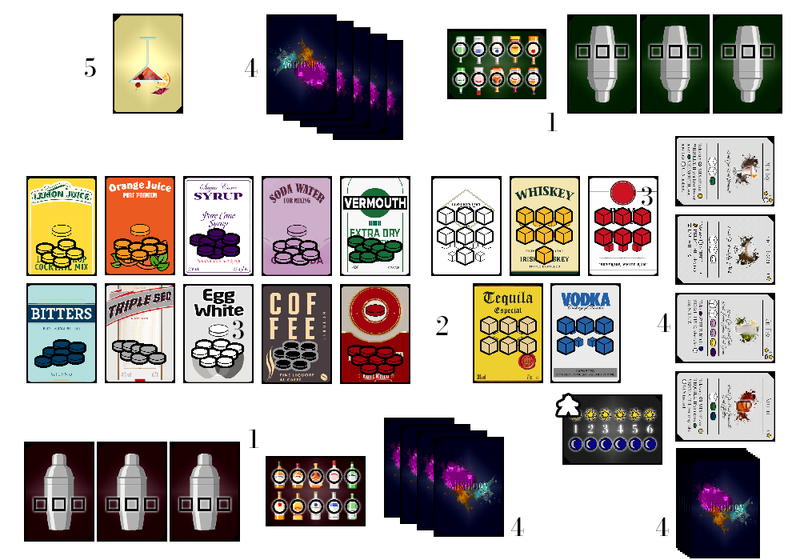
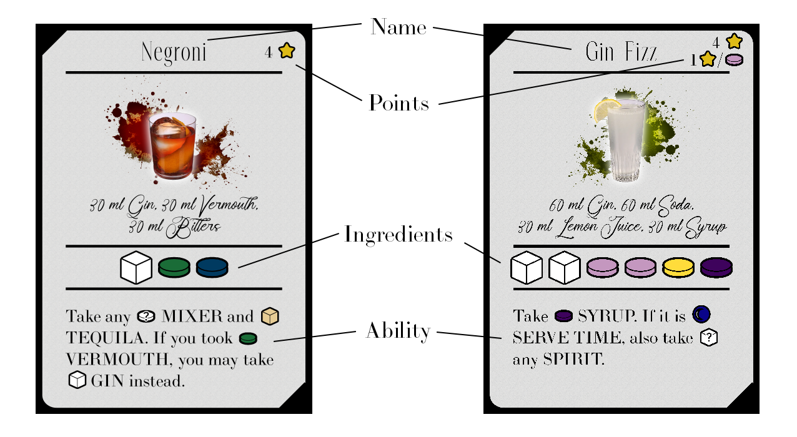

Players will mix drinks though six rounds. Mixed drinks earn Points ⭐. The player with the most Points at the end of the game will be the winner.
1. Each player takes three Shaker cards and a Mixer Storage card and places them in front of them.
2. Place the Spirit cards, the Mixer cards, and the Round card on the center of the table. Place the Round marker on the Marker car, on the space marked 1 ☀️.
3. Place a number of Spirit cubes on each Spirit card equal to the number of cubes displayed on it. Place the remaining Spirit cubes nearby. Place all available Mixer disks on their respective Mixer card.
4. Shuffle the Drink cards and deal 5 to each player. Then deal 4 cards face up to the center of the table. Place the remaining cards to the side
5. The player that last had a cocktail takes the First Player card and starts the first round. The game is ready to begin.

The game takes place over six rounds, with each round having two phases: Prep Time ☀️ and Serve Time 🌙. In each, of the phases, players alternate taking actions until both players pass. When both players pass, the game proceeds to the next phase or round.
There are several importar parts of a Drink card:

Players can perform one of the following actions on their turn:
To play a Drink card, the player chooses one of the cards in their hand and plays it face up on the table. Then that player acquires ingredients following the rules written on the card.
The ingredients are divided into two groups: spirits and mixers. Spirits (Gin, Whiskey, Rum, Tequila, and Vodka) are represented by cubes and mixers (Lemon Juice, Orange Juice, Syrup, Soda, Vermouth, Bitters, Triple Sec, Egg White, Coffee Liqueur, and Maraschino) are represented by disks.
Collected Spirits must be stored in a player's Shaker card, while Mixers must be stored in the player's Mixer Storage card. Each Shaker can only have a maximum of three Spirit cubes at a time and they must all be of the same Spirit. The Mixer Storage card can hold a maximum of ten Mixer disks at a time, and they can be of any kind. Players may discard Mixer disks from their Mixer Storage card and empty their Shaker cards at any time. Players may not discard individual Spirit cubes from their Shaker cards without emptying them.
The number of available Spirit cubes available to be collected each Round is shown on their respective card. Therefore, discarded Spirit cubes should be placed aside and not returned to their card. If a player plays a card that allows them to collect a Spirit cube and there is none available, then no cube is collected. Mixer disks are not capped.
Players are never forced to collect Spirit cubes and Mixer disks and are not forced to collect all ingredients that a card allows them to collect.
After playing a Drink card during Prep Time ☀️, the player then selects one of the face up Drink cards on the center of the table and places it in front of them face down. That card will be available to that player during this round's Serve Time 🌙. The player than places that played card in the now vacant spot in the face up cards in the middle of the table. Therefore, there must be four face up cards at all times during Prep Time ☀️. Played Drink cards during Serve Time 🌙 are discarded and are out of the game.
During Serve Time 🌙, players may mix drinks. To do so, players play a Drink card face up in front of them. In order to mix a drink, players must have the following:
Mixed Drink cards stay face up in front of the player for the rest of the game.
When a player passes, they take no further actions during this phase. The other player may then take as many consecutive actions as they desire until they also decide to pass. A player must pass if they have no Drink cards remaining in their hand.
After both players pass, the phase ends. Do the following steps when each phase ends, unless the it was the last phase of the game:
Prep Time ☀️
Serve Time 🌙
After the Serve Time 🌙 phase of the sixth round, players total up the Points ⭐ of their mixed drinks. The player who scored the most Points ⭐ is the winner. If the players are tied, the player who mixed less drinks is the winner. If the tie still persists, the game ends in a tie.